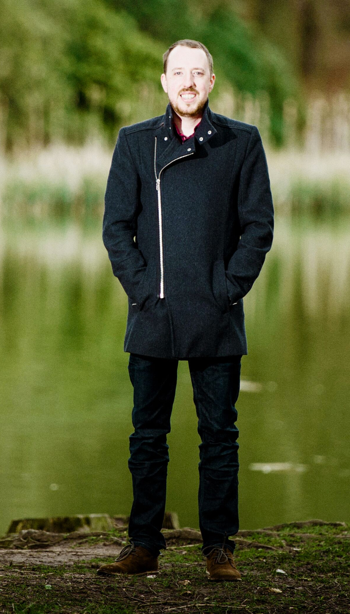

Senior interaction designer, UI developer, and team player based in Leeds, UK.
WHAT I DO
Working alongside heroes in teams and organisations to design and make things that people want to use and can use. I mentor, talk and make terrible jokes.
Come on, just show me the work!
01. Research
02. User Interaction
03. Development
04. Validation
Previous roles, I have: helped as Interaction Designer at DWP Digital on the Report benefit fraud project, led design at British Airways, Argos, ITV, and built plenty at Jet2, Ahoy, Open Path, and Spectrum Brands.

I have 15 years of experience working with public services, big and small companies and creative agencies.
{% include work_stripped.html %}
Things I do:
- Let's learn things
Join a group of eager learners who want to widen their knowledge of any field they wish (design, development, copywriting etc) with help from myself. This is open to all - irregardless of experience, gender, age or location.
- Two Dads Do Digital
Honest talk from two dads, both based in digital jobs (design and marketing), soap-boxing about what excites, motivates or grinds their gears. Also, about being a parent in a fast world - it’s never easy!
Recent posts on my blog
{% for post in site.posts limit: 5 %}
{{ post.date | date: "%-d %B %Y" }}
{{ post.title }}
{% endfor %}
View all blog posts →